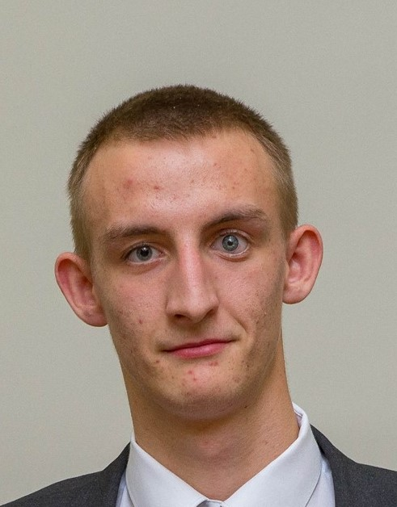

Peter Sedláček
Základné informácie
- Peter Sedláček,Neporadza 1111
- Mobil: +421911275563
- E=mail: sedlacekpeter19@gmail.com
Dosiahnuté vzdelanie
- 2010-2018 Gymnázium Janka Jesenského Bénovce nad Bebravou
- 2019- FEI STU Bratislava
Počítačové zručnsti
- MS Windows,Linux
- Python, C, C++, Java, Sql...
Jazykové zručnosti
- Anglický jazyk B2
- Nemecký jazyk B1